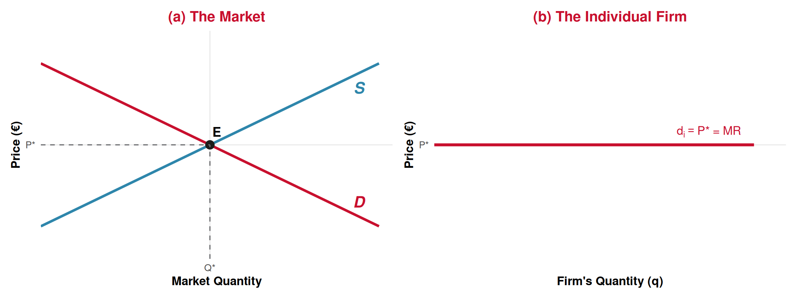
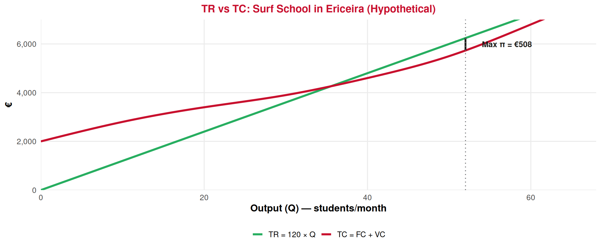

Producer Theory
Lecture 11: Companies — Profit Maximization
Recap: Lecture 10 ⏪
What we covered last time:
- Short run vs Long run: fixed inputs vs all variable
- Cost types: FC, VC, TC and their per-unit versions (AFC, AVC, ATC)
- Marginal cost (MC): the extra cost of one more unit — the key curve
- MC crosses AVC and ATC at their minimums (the “exam grade” rule)
- LRAC: the long-run envelope — economies and diseconomies of scale
. . .
🎯 Today: Now that we know costs, how does a firm decide how much to produce to make the most profit?
Perfect Competition
What Kind of Market Are We Studying? 🏛️
Perfect Competition
A market structure where:
- Many buyers and many sellers
- Identical (homogeneous) products
- Free entry and exit — firms can enter or leave the market
- Perfect information — everyone knows prices and quality
Result: No single firm can influence the market price. Each firm is a price taker.
✅ Close to perfect competition:
- Agricultural products (wheat, rice)
- Basic tourism services in competitive areas (generic hostels, taxis)
- Street food vendors in a tourist market
❌ Not perfect competition:
- Airlines (few carriers, differentiated)
- Luxury hotels (brand, location matter)
- Disney parks (unique product)
The Price Taker 🏷️
Price Taker
A firm in perfect competition cannot choose its price. The market determines the price through supply and demand. The firm just decides how much to produce at that price.
Think of it this way:
- A wheat farmer can’t charge €5/kg when the market price is €3/kg — nobody would buy
- There’s no reason to charge €2/kg either — they can sell all they want at €3/kg
- So the only decision is: how many kilograms to produce?
. . .
Tourism analogy: Imagine dozens of identical beach umbrella rental stands on a long Algarve beach. If one charges €12/day when all others charge €10/day, tourists just walk to the next stand. The market price is €10 — take it or leave it.
The Firm’s Demand Curve in Perfect Competition 📉
Left: Market supply and demand determine the equilibrium price \(P^*\).
Right: Each individual firm faces a perfectly horizontal demand curve at \(P^*\). It can sell as much as it wants at this price — but nothing above it.
👉 For a price taker: Price = Marginal Revenue. Every extra unit sold brings in exactly \(P^*\).
The Profit Maximization Problem
Profit: The Basics 💰
Profit
\[\pi = TR - TC\]
where \(TR = P \times Q\) (total revenue) and \(TC = FC + VC\) (total cost).
The firm’s question: At what quantity \(Q\) is \(\pi = TR - TC\) as large as possible?
Two equivalent approaches to find the answer:
| Approach | Method | Rule |
|---|---|---|
| 1️⃣ TR vs TC | Compare total revenue and total cost curves | Maximize the gap \(TR - TC\) |
| 2️⃣ MR vs MC | Compare marginal revenue and marginal cost | Produce where \(MR = MC\) |
Both give the same answer! Approach 2️⃣ is more practical and leads us to the supply curve.
Approach 1: TR vs TC — The Total Curves 📈

👉 Profit = vertical gap between TR and TC. Maximum profit is where this gap is widest — at around Q* ≈ 52 students.
This uses the surf school data from last lecture’s exercise, with P = €120/student.
Approach 2: MR vs MC — The Per-Unit View ⭐
The Profit-Maximizing Rule
Produce the quantity where Marginal Revenue = Marginal Cost:
\[MR = MC\]
In perfect competition, since \(P = MR\), this becomes:
\[\boxed{P = MC}\]
Why does this work? Think about it one unit at a time:
- If \(P > MC\) for the next unit → producing it adds to profit → produce more! ➡️
- If \(P < MC\) for the next unit → producing it reduces profit → produce less! ⬅️
- If \(P = MC\) → you’re at the sweet spot — no way to increase profit further 🎯
💡 This is just marginal analysis from Lecture 3 applied to the firm!
P = MC Graphically 📐

Reading Profit on the Graph 🔍
Profit as a Rectangle
At the profit-maximizing quantity \(Q^*\):
\[\pi = (P - ATC) \times Q^*\]
This appears on the graph as a rectangle with height \((P - ATC)\) and width \(Q^*\).
Three possible outcomes:
- 📈 \(P > ATC\) → Positive profit (green rectangle)
- ↔︎️ \(P = ATC\) → Zero economic profit (breakeven)
- 📉 \(P < ATC\) → Loss (red rectangle)
Important nuance: “Zero economic profit” is not bad!
It means the firm covers all costs, including the owner’s opportunity cost of time and capital.
The firm earns a normal return — the same as its best alternative. No reason to leave!
. . .
👉 Next lecture we’ll explore the loss case in detail: when should a firm shut down vs. keep operating at a loss?
Profit, Zero Profit, and Loss: Three Scenarios 📊

In all three cases, the firm produces where P = MC. What changes is the relationship between P and ATC at that quantity.
Worked Example: Tourism
Bottle Factory from the Textbook :bottle:
The sebenta’s glass bottle factory has FC = €40/day and the following cost structure:
| Q (bottles/day) | Total Revenue (€0.35/bottle) | Labor Cost (€) | TC (€) | Profit (€) | MC (per 100 bottles) |
|---|---|---|---|---|---|
| 0 | 0 | 0 | 40 | −40 | — |
| 100 | 35 | 10 | 50 | −15 | 0.10 |
| 200 | 70 | 20 | 60 | 10 | 0.10 |
| 300 | 105 | 40 | 80 | 25 | 0.20 |
| 400 | 140 | 70 | 110 | 30 | 0.30 |
| 500 | 175 | 110 | 150 | 25 | 0.40 |
| 600 | 210 | 160 | 200 | 10 | 0.50 |
| 700 | 245 | 220 | 260 | −15 | 0.60 |
Source: Course textbook (sebenta), Table 10
👉 Maximum profit (€30/day) at Q = 400 bottles/day. This is where MC is closest to the price (€0.35/bottle) on the rising portion of MC!
What If the Price Changes? 📈
The textbook shows what happens when the bottle price rises to €0.45/bottle:
| Q (bottles/day) | TR at €0.35 | TR at €0.45 | TC (€) | Profit at €0.35 | Profit at €0.45 |
|---|---|---|---|---|---|
| 0 | 0 | 0 | 40 | −40 | −40 |
| 100 | 35 | 45 | 50 | −15 | −5 |
| 200 | 70 | 90 | 60 | 10 | 30 |
| 300 | 105 | 135 | 80 | 25 | 55 |
| 400 | 140 | 180 | 110 | 30 | 70 |
| 500 | 175 | 225 | 150 | 25 | 75 |
| 600 | 210 | 270 | 200 | 10 | 70 |
| 700 | 245 | 315 | 260 | −15 | 55 |
Source: Course textbook (sebenta), Tables 10 & 11
💡 Key insight: When price rises from €0.35 to €0.45, the firm produces more (400 → 500 bottles) and earns more profit (€30 → €75). The new optimum is where MC ≈ €0.40, closer to the new higher price.
The General Lesson 💡
Higher Price → More Production → More Profit
When the market price rises, the \(P = MC\) rule tells the firm to expand output along its MC curve. This is the seed of the supply curve (Lecture 13).
What higher prices do:
- ⬆️ Price rises
- 👉 New P = MC intersection at higher Q
- 💰 Revenue rises (both price and quantity)
- 📈 Profit increases
This is why supply curves slope upward!
Tourism application:
When hotel room prices rise in Lisbon during peak season:
- Hotels hire more staff, extend hours
- They serve more guests (higher Q)
- Profit per room rises
- More production at higher cost → \(P = MC\) at a new, higher quantity
What About Changes in Fixed Costs? 🔒
The textbook shows an important result: when fixed costs rise (from €40 to €70/day), the profit-maximizing quantity stays the same (Q = 400).
Why? Because \(P = MC\) doesn’t involve FC at all! MC only reflects changes in variable costs.
Fixed Costs Don’t Affect the Optimal Quantity
FC shifts the total cost curve up (and ATC up), reducing profit, but the optimal Q stays where P = MC.
| FC = €40 | FC = €70 | |
|---|---|---|
| Optimal Q | 400 | 400 |
| Profit | €30 | €0 |
| MC at Q = 400 | €0.30 | €0.30 |
Same Q, but profit drops by exactly the FC increase (€30).
. . .
⚠️ FC does matter for the stay or exit decision — which we cover next lecture!
Marginal Revenue in Detail
Why P = MR in Perfect Competition ⚖️
Marginal Revenue is the extra revenue from selling one more unit:
\[MR = \frac{\Delta TR}{\Delta Q}\]
In perfect competition, the firm sells every unit at the same market price \(P\):
\[TR = P \times Q \quad \Rightarrow \quad \text{If Q goes up by 1:} \quad \Delta TR = P\]
So \(MR = P\) for every unit. That’s why the firm’s demand curve (\(d_i\)) is also its MR curve — a horizontal line at \(P\).
. . .
⚠️ This is specific to perfect competition! A monopolist (single seller) must lower the price to sell more, so \(MR < P\). We’ll see this in later courses.
For now: Price taker → \(P = MR\) → profit-maximizing rule is simply \(P = MC\).
The Marginal Approach: Step by Step 👣
Applying the P = MC rule to the bottle factory (P = €0.35/bottle):
| Going from… | …to | Extra revenue (MR) | Extra cost (MC) | Profit change | Decision |
|---|---|---|---|---|---|
| 0 → 100 | 100 | €0.35 | €0.10 | +€25 | ✅ Produce |
| 100 → 200 | 200 | €0.35 | €0.10 | +€25 | ✅ Produce |
| 200 → 300 | 300 | €0.35 | €0.20 | +€15 | ✅ Produce |
| 300 → 400 | 400 | €0.35 | €0.30 | +€5 | ✅ Produce |
| 400 → 500 | 500 | €0.35 | €0.40 | −€5 | ❌ Stop! |
💡 This step-by-step reasoning confirms the table’s answer: Q* = 400 bottles/day.
Tourism Application
Hotel Revenue Management: A Profit Maximization Story 🏨
Why do hotels charge different prices at different times?
The \(P = MC\) rule explains dynamic pricing:
☀️ Peak season (summer, Lisbon festivals):
- Market price \(P\) is high (demand is high)
- P = MC at a higher Q → hire more staff, open all rooms
- Profit per room is large
- Hotels expand services
☁️ Off-season (January):
- Market price \(P\) is low
- P = MC at a lower Q → reduce staff, close a wing
- Profit per room is small (or even losses)
- Hotels scale back
. . .
👉 The \(P = MC\) rule doesn’t just say “how much to produce” — it explains the seasonal rhythm of tourism businesses!
Summary 📝
Today’s Key Takeaways:
- Perfect competition: many firms, identical product, price taker
- Price taker: the firm faces a horizontal demand curve at the market price → \(P = MR\)
- Profit = \(TR - TC = (P - ATC) \times Q\)
- Two approaches: maximize the gap between TR and TC (total curves), or set \(MR = MC\) (per-unit curves)
- The golden rule: in perfect competition, produce where \(P = MC\) (on the rising portion of MC)
- If \(P > ATC\) → positive profit; \(P = ATC\) → zero economic profit; \(P < ATC\) → loss
- Fixed costs don’t affect the optimal Q — only variable costs (through MC) matter for the production decision
- Higher price → higher quantity → higher profit — this is the seed of the supply curve
Connection: Lecture 10 gave us the cost curves. Today we used them to find \(Q^*\). Next lecture: what if the firm is making a loss? When should it shut down vs. continue?
Next (Lecture 12, March 26): Profits, Shutdown and Breakeven Price Levels. Supply.
Exercises
Practice Time! ✏️
Profit maximization with the \(P = MC\) rule.
Exercise 1: Multiple Choice
Question: A small souvenir shop in Sintra operates in a competitive market. The market price for a standard Sintra tile replica is €8. The shop’s marginal cost of producing the 50th tile per day is €6, and the marginal cost of the 51st tile is €8.50. How many tiles should the shop produce?
A. 49 tiles
B. 50 tiles
C. 51 tiles
D. Cannot be determined without knowing fixed costs
Answer: B
At Q = 50: MC = €6 < P = €8 → producing the 50th tile adds to profit ✅
At Q = 51: MC = €8.50 > P = €8 → producing the 51st tile reduces profit ❌
So produce 50 tiles. Note: fixed costs are irrelevant to this decision (option D is a trap!).
Exercise 2: Multiple Choice
Question: A perfectly competitive firm is producing at Q* where P = MC = €25. At this quantity, ATC = €20. What can we say about this firm?
A. The firm is making a loss and should shut down
B. The firm is earning zero economic profit
C. The firm is earning a positive economic profit of €5 per unit
D. The firm should increase output to reduce ATC further
Answer: C
Profit per unit = \(P - ATC = €25 - €20 = €5\). Total profit = €5 × Q* > 0.
The firm is making positive economic profit. It should NOT increase output (D is wrong) because \(P = MC\) already — producing more would mean \(MC > P\), reducing profit.
Exercise 3: Open Question ✍️
A small boat tour operator in Lagos (Algarve) offers coastal cave tours in a competitive market. The market price is €35 per ticket. The operator has the following cost structure:
| Tours/day (Q) | FC (€) | VC (€) | TC (€) | MC (€/tour) |
|---|---|---|---|---|
| 0 | 200 | 0 | 200 | — |
| 1 | 200 | 20 | 220 | 20 |
| 2 | 200 | 35 | 235 | 15 |
| 3 | 200 | 55 | 255 | 20 |
| 4 | 200 | 80 | 280 | 25 |
| 5 | 200 | 115 | 315 | 35 |
| 6 | 200 | 165 | 365 | 50 |
| 7 | 200 | 235 | 435 | 70 |
Hypothetical illustrative example
a) Calculate TR and profit at each output level. At what quantity is profit maximized?
b) Verify that this quantity is consistent with the \(P = MC\) rule.
c) Calculate ATC at the profit-maximizing quantity. Is the firm earning positive, zero, or negative economic profit?
d) Suppose the market price drops to €20. What is the new profit-maximizing quantity? What is profit at this quantity?
e) If fixed costs rise from €200 to €300 (e.g., due to a higher boat lease), does the profit-maximizing quantity at P = €35 change? Explain.
Exercise 3: Solution — Part a
a) TR = P × Q = €35 × Q
| Q | TR (€) | TC (€) | Profit = TR − TC (€) |
|---|---|---|---|
| 0 | 0 | 200 | −200 |
| 1 | 35 | 220 | −185 |
| 2 | 70 | 235 | −165 |
| 3 | 105 | 255 | −150 |
| 4 | 140 | 280 | −140 |
| 5 | 175 | 315 | −140 |
| 6 | 210 | 365 | −155 |
| 7 | 245 | 435 | −190 |
Looking more carefully: at Q = 5, MC = €35 = P exactly, so Q* = 5 is the profit-maximizing quantity. At Q = 4, the 5th tour still adds €35 revenue at €35 cost — it’s worth producing.
⚠️ Note: the firm is making a loss at every output level! But Q = 5 minimizes that loss. Whether to keep operating or shut down is the topic of the next lecture.
Exercise 3: Solution — Parts b & c
b) Using the \(P = MC\) rule:
- At Q = 4: MC = €25 < P = €35 → produce the 4th tour ✅
- At Q = 5: MC = €35 = P = €35 → produce the 5th tour ✅ (MR = MC exactly)
- At Q = 6: MC = €50 > P = €35 → don’t produce the 6th tour ❌
So the rule gives Q* = 5, consistent with the table! ✅
c) At Q* = 5:
\[ATC = \frac{TC}{Q} = \frac{€315}{5} = €63 \text{ per tour}\]
Since \(P = €35 < ATC = €63\), the firm is earning negative economic profit (a loss):
\[\pi = (P - ATC) \times Q = (35 - 63) \times 5 = -€28 \times 5 = -€140\]
The firm is losing €140/day. 📉
Exercise 3: Solution — Parts d & e
d) At P = €20:
- Q = 1: MC = €20 = P → this is where P = MC on the rising portion
- Q = 2: MC = €15 < P → but this is the falling portion of MC (careful!)
- Q = 3: MC = €20 = P → this is on the rising portion ✅
The profit-maximizing quantity is Q* = 3 (where P = MC on the rising portion of MC).
Profit at Q = 3: \(TR = 20 \times 3 = €60\), \(TC = €255\), \(\pi = 60 - 255 = -€195\).
The loss worsened from −€140 to −€195. The lower price hurts!
e) If FC rises from €200 to €300:
No, the profit-maximizing quantity does not change! FC does not appear in the MC calculation. MC stays the same at every quantity, so \(P = MC\) still gives Q* = 5 at P = €35.
However, profit falls by exactly €100 (the FC increase): \(\pi = -€140 - €100 = -€240\).
👉 Fixed costs affect how much profit you earn, but not how many units to produce.
Next Lecture
March 26, 2026: Profits, Shutdown and Breakeven Price Levels. Supply. 📈
If the firm is making a loss, when should it keep operating and when should it shut down?
. . .
💡 Hint: The answer involves comparing \(P\) to AVC, not ATC!
Thank You!
Questions? 🙋
📧 paulo.fagandini@ext.universidadeeuropeia.pt
Next class: Thursday, March 26, 2026
This lecture establishes the central result of producer theory: firms maximize profit where P = MC. The key pedagogical goals are (1) understanding why P = MC works (marginal thinking), (2) reading profit as a rectangle on the graph, and (3) the irrelevance of FC for the production decision. The worked example from the textbook’s bottle factory grounds the theory in familiar material. Next lecture builds on the loss scenario to introduce shutdown and breakeven conditions, and connect MC to the supply curve.